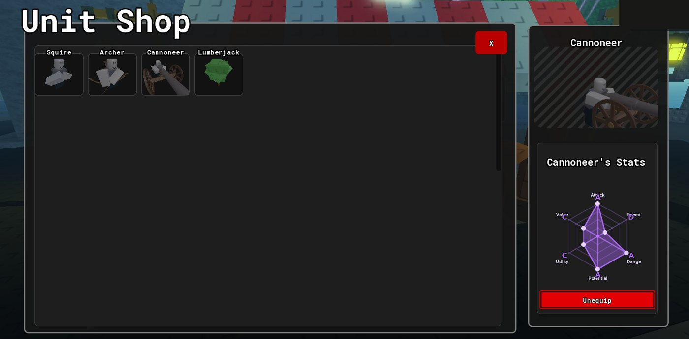
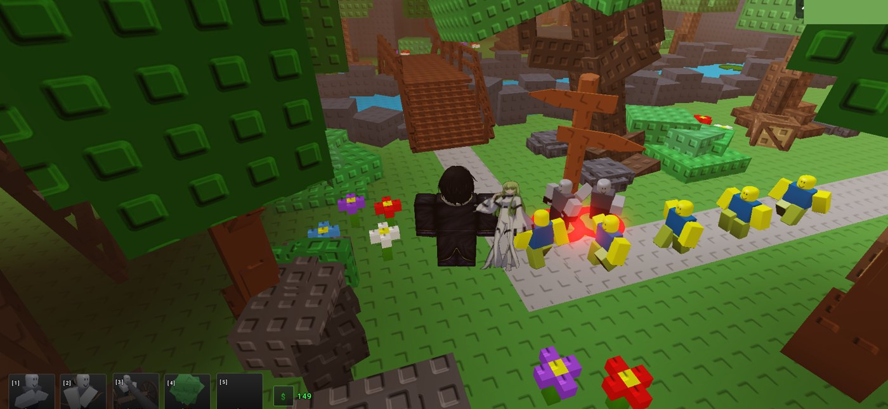
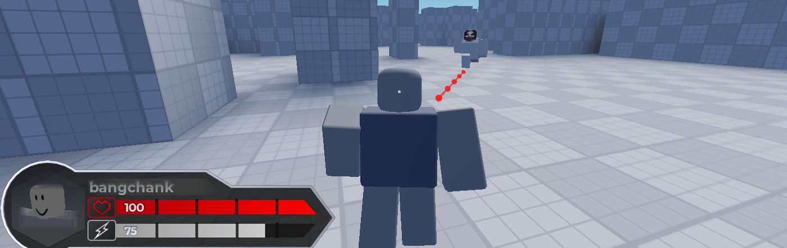
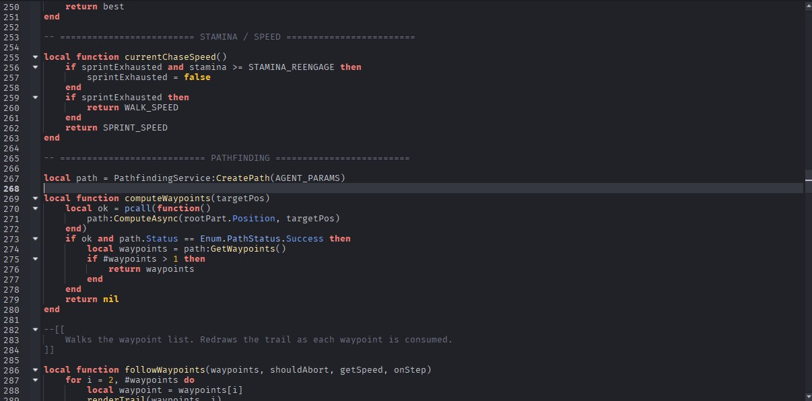

I write it all myself instead of grabbing something off the toolbox, I keep the important checks on the server, and I make sure it still runs fine on a cheap phone. VFX and animation are my second skill, so an ability goes from the toggle to the finished effect without a handoff.
Open for short commissions. One system, one feature, an optimization pass, or a bug you're just done dealing with.
released games
1st placeHiddenDevs Design a Disaster · Oct 2026
Allergy Season
Duo team. My part: scripting, VFX, animation and UI.
Sneezes set off the disasters. At 100% on the sneeze meter you sneeze hard enough to start a random disaster. Here it's a tornado, with a manga impact frame on the sneeze and you getting flung. The HUD is a local news weather report telling you to run for your life. Recorded on a phone.
Chisa ultimate. A sword ultimate played as a cutscene: letterbox bars, camera cuts through close shots with anime impact frames and speed lines, then it pulls back out to the normal game camera. The sword is Chisa's weapon from Wuthering Waves.
VFX
Animation
Mana Zone. The Flame Mage's ultimate, Mereoleona's Calidos Brachium Barrage from Black Clover. A flash step in, a ring of fire fists around the target, quiet for the voice line, slow motion right before the hit, then every fist lands at once and cracks the ground. Recorded in Studio.
Scripting
VFX
My tower defense game, boss wave on a phone. The Noob King has his own health bar and state label, and the left panel is the upgrade and targeting menu for whatever you placed. All mine: the scripting, the UI, the VFX and the unit models.
Scripting
Commission: 3D backpack inventory. Built inside the client's own place. TAB brings the backpack rig up in front of the camera, the items are real 3D objects sitting in it, and each slot has its own take out prompt. It runs alongside a first person viewmodel and a hotbar.
Scripting
Parry timing. The striker's swing has a red wind up, and blocking right at that moment turns the block into a parry. You get the impact burst and the deflect, and no damage, the health bar stays at 125 the whole time.
VFX
Animation
Frieren cutscene, all mine. She casts into the sky, a ring opens on the ground and flowers spread over the whole field. I did the cutscene and camera scripting, the VFX, the character animation, the map and the lighting.More clips 5+
VFX
Animation
Ultimate ability, scripting and VFX all mine. The camera work, the cutscene bars, the orbit and the pull back on the cast, and the ability toggle that drives the sequence and hands off to each stage of the effect. The VFX is built as a real instance tree.
Scripting
Wire box objective. The prompt checks the objective's own state first, then opens a splice minigame where you reroute wires between terminals. Finishing it gets logged on the server and counts toward the round's win condition.
Scripting
Generator objective. A hold interaction with a timing ring and a four stage progress bar. Each stage saves on its own, so a survivor who gets interrupted mid repair keeps what they already did.
Scripting
Server terminal objective. Pick up data chips around the map and hold them over the console's scanner. Each symbol decrypts into a number and the panel tracks the system status until the terminal is back up. The pickups, the hold and the decryption all run on the server.
Scripting
Movement and camera in the real map. The custom controller and the soft shift lock camera in the actual built map, not a test room. The health and stamina HUD drains as you sprint.
code
Gifting system, server side
You buy a product for another player and it lands in their inbox, even if they're in another server or offline. If they don't claim it before it expires, it goes back to the sender.
A full tower defense game I made by myself. Code, UI, enemy behaviour, economy, balance, mobile support, all of it. It's live right now, which is honestly the main reason it's on here, you can go play it and check everything below yourself.

The unit shop, each unit has its own hexagonal stat radar. All custom UI, no plugins.

A wave in progress, you can see the placed units, the enemy path and the economy HUD.
Hexagonal stat radarIt reads each unit's stat table and draws the polygon, the axis web and the letter grades at runtime. I built it out of primitives instead of using a charting module, so when I add a new unit I don't have to touch the UI at all.
Wave and enemy directorThe waves scale up in what they're made of as you go, the enemies have different movement behaviours, and the multi-phase bosses switch up their attack patterns in the middle of the fight.
Tower placementValidation that makes sure the preview and the placement you actually commit are always the same thing. Works the same with mouse and with touch.
Economy and support unitsIncome towers and payouts per wave, with some anti-snowball levers in there so a really strong early game doesn't make the rest of the run boring.
Loadout systemEquip, unequip and reorder. Including the sparse array stuff that silently breaks Lua table iteration if you're not careful about it.
Responsive UI and performanceLayouts that hold up on a small phone and on widescreen, animations split between client and server, and the per frame loops merged down into as few as possible.
Unannounced Asymmetric Horror Project
An asymmetric horror game, 12 survivors against 2 strikers, on two maps, sort of in the style of Dead by Daylight. I can't say the name until we announce it. I'm the only programmer on it, my partner does the design and the map layouts.

The striker mid chase. The red trail is the computed path getting used up one waypoint at a time.

Chase speed is tied to stamina, with an exhaustion threshold and a re-engage threshold, and the pathfinding fails safe if it can't find a route.
Custom character controllerMovement written from the ground up because I didn't want the default humanoid feel. Sprint, crouch and the state transitions, with weight based animation crossfading.
Soft shift-lock cameraA custom camera rig set up for over the shoulder horror framing. The easing keeps your aim responsive but it doesn't have that stiff feel the stock shift lock has.
Striker AIPathfindingService routing that recomputes when a path fails, and it all runs off a stamina model. When the striker gets exhausted it drops to walk speed, and a re-engage threshold decides when it starts chasing again.
Objectives and interactionProximity prompts where every objective keeps its own state, and they feed into the round's win conditions.
Server-authoritative movementWalk speed, position and player state all get validated on the server. That closes the client trust holes exploiters use to outrun you or clip through the map.
what I build
Data & savingDataStores and ProfileService. Save structures, session locking, and migrating old player data over without wiping anyone's stuff.
Matchmaking & roundsQueues, putting people on teams, the whole round lifecycle, and working out who won.
Character & cameraCustom controllers, sprint / crouch / stamina states, animation blending, custom camera rigs.
Enemy & NPC AIPathfindingService routing, waypoint following, chase and search state machines, multi-phase bosses.
UI from scratchHUDs, shops, upgrade panels, stat displays that read from data, and layouts that don't fall apart on a small phone.
VFX secondary skillAbility and cutscene effects, beams, trails, particle bursts and screen framing, built as a real instance tree. Everything above this line is the scripting, that's the primary skill, this one just means I don't have to wait on a VFX artist to finish an ability.
Performance & securityFiguring out what's eating your frame rate, moving work off the server, and validating remotes so exploiters can't just ask the server for stuff.
ScopeYou tell me the system or the bug. I ask the questions that actually change the estimate, and then I write down what's included and what isn't so we're on the same page.
EstimateYou get a fixed deliverable and a real timeline before I start anything. If the job grows halfway through we re-quote it, I'm not going to quietly go over and then surprise you with it.
BuildI send updates that have something you can actually test in them, not a week of nothing and then a giant wall of code.
HandoffCommented, modular code that drops straight into your place, a quick walkthrough of how it all fits together, and a window after that where I fix anything that comes up.
working together
Availability (Eastern)Thu and Fri 6 to 8 PM, Sat and Sun 3 to 10 PM. That's around 25 hours a week. I'd rather be upfront about that than pretend I can do full time.
Best fitOne system, a feature, an optimization pass, closing exploit holes, or hunting down a bug. Usually a few days to a few weeks of work.
RatesI quote per project once we've agreed on the scope. Tell me what you need and I'll come back to you with a number and a date.
ReferencesCrit (critical_dummy) and Pearl (pearlsnivy1) are happy to vouch for me. I can give you more if you want.
connect
Send me the game, what the problem is and when you need it by. If I'm not the right person for it I'll tell you straight up instead of wasting your week.